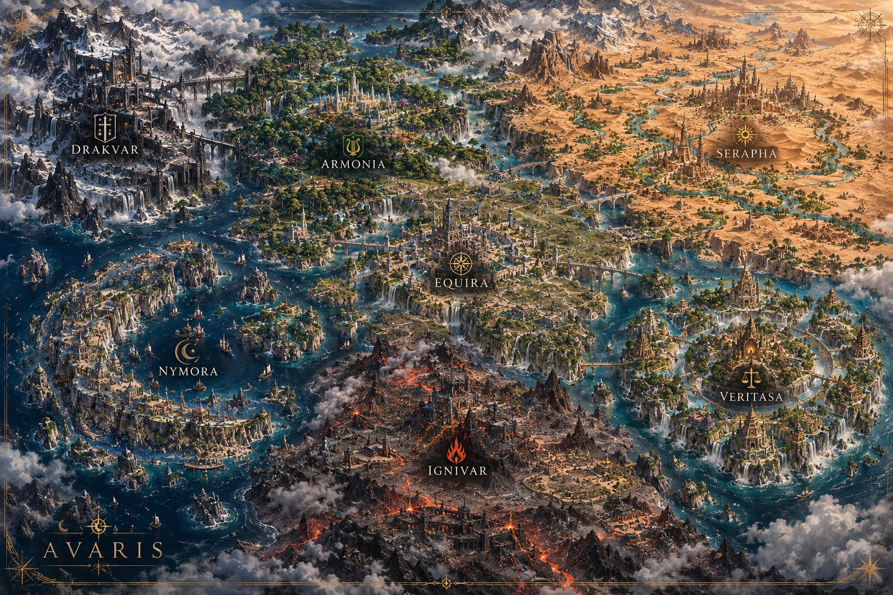

The world
The World of Avaris
A space for the world’s foundations and history.
EXPLORE AVARIS
Hover over a kingdom to explore.
Tap a kingdom to explore.

AVARIS — The Creation Myth
Read the creation myth ↗The World of Avaris
Content coming later
The Seven Kingdoms
Content coming later
The Seven Talismans
Content coming later
The Chosen
Content coming later
Nobility
Content coming later
History / Timeline
Content coming later